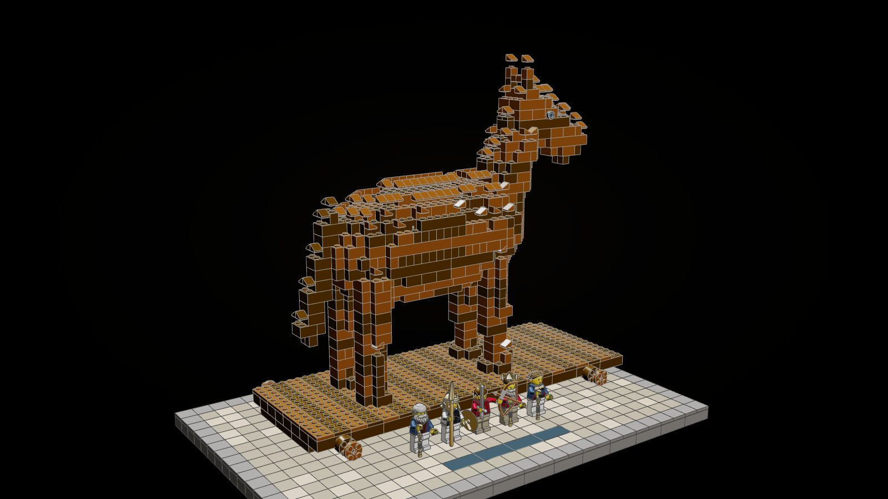
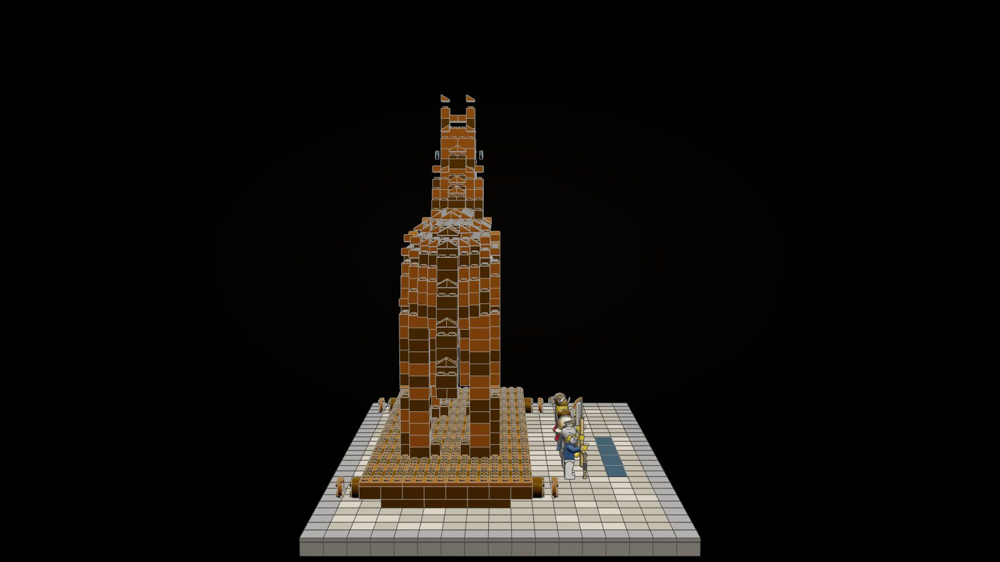
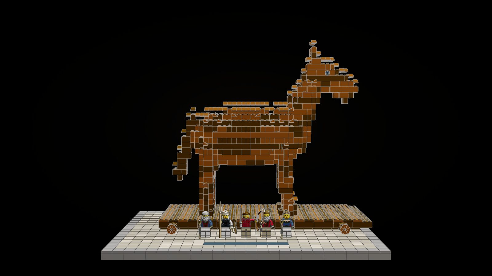
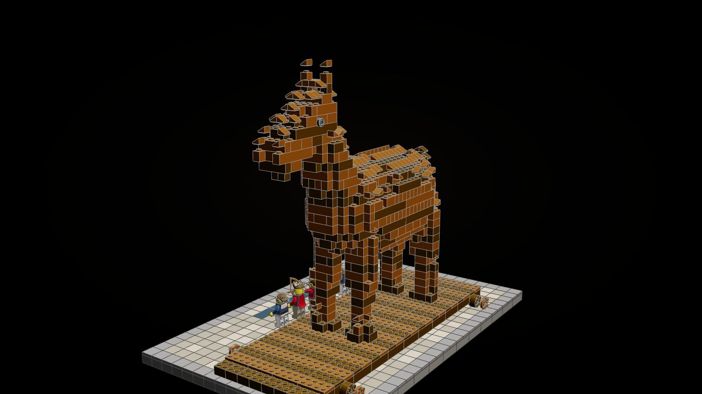
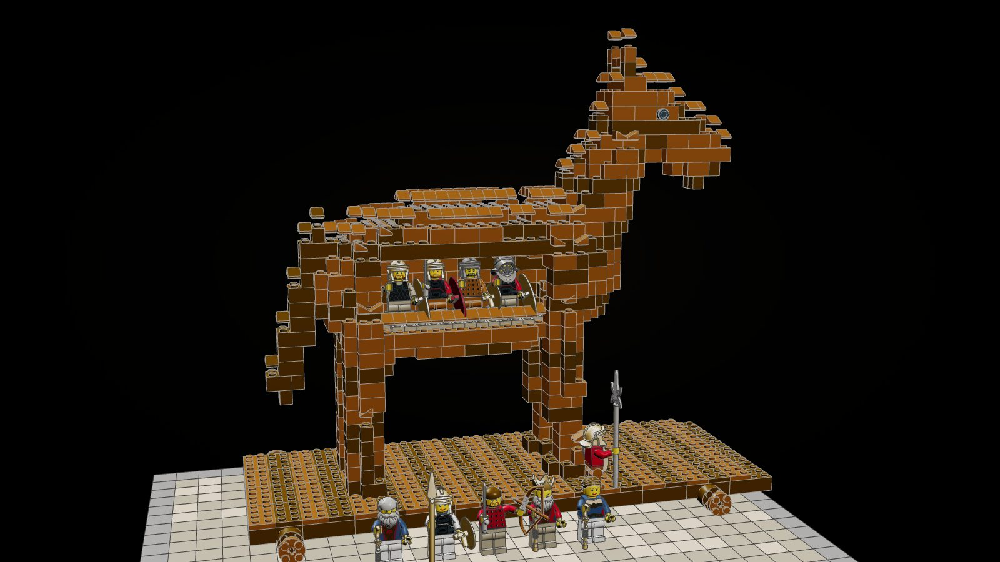
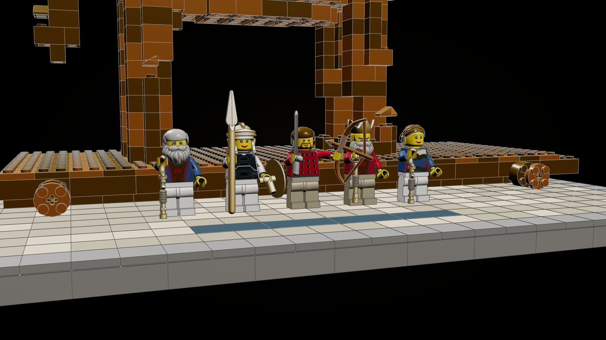
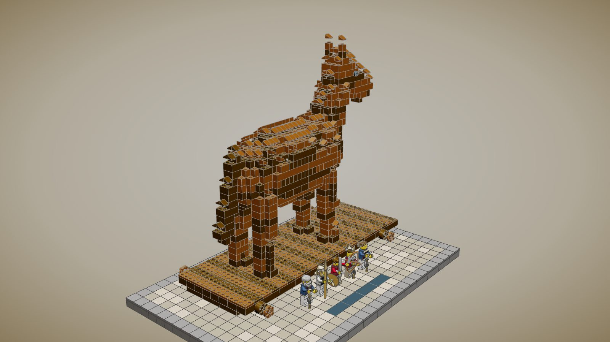

Odyssey · display set · book 8, the song of Demodocus
The Wooden Horse
The trick that ended the war, as a model you build brick on brick. A timber horse on its rolling cart, the right flank lifting away to show the Greeks waiting in the dark of its belly, on a paved display base with the story's figures standing in a row before it.

1,578pieces
33 cmtall
27 × 42 cmbase, 34 × 52 studs
10minifigures
Front, side, back



Open the horse

- A hold that holdsA flat deck inside the body has room for five minifigures standing. Posts carry the roof, so nothing inside is hanging from the side of a brick.
- A removable flankThe right side, lintel included, comes away as one panel and clicks back in. Close it to hide the Greeks, open it to tell the story.
- Every brick clicksEach part stands on studs and is held by the parts below it. The build is checked by
tools/forage/product/clicks.py: zero parts held by nothing. - The rolling cartA timber cart on four wheels, its three layers laid crosswise, the way the Trojans dragged the horse into their city.
- A display baseTan and dark-tan paving in a dark grey frame, with a black nameplate along the front edge.
The figures

Demodocusthe blind bard who sings it
Athenawho gave Epeius the plan
Odysseuswho led the men inside
Menelauswho waited with him
Helenwho circled the horse, calling
Five Greek warriorsin the hold, and one on the cart
On the shelf
